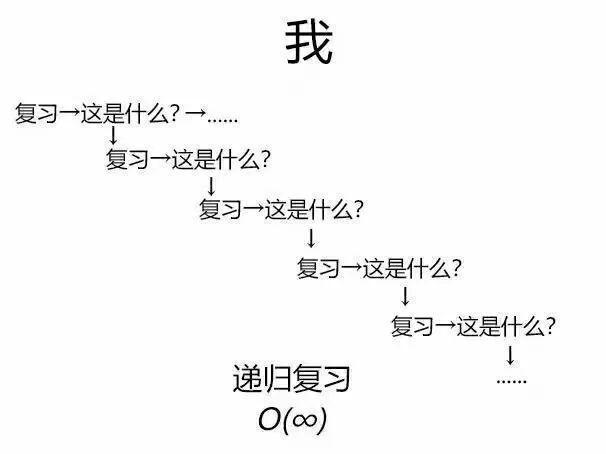
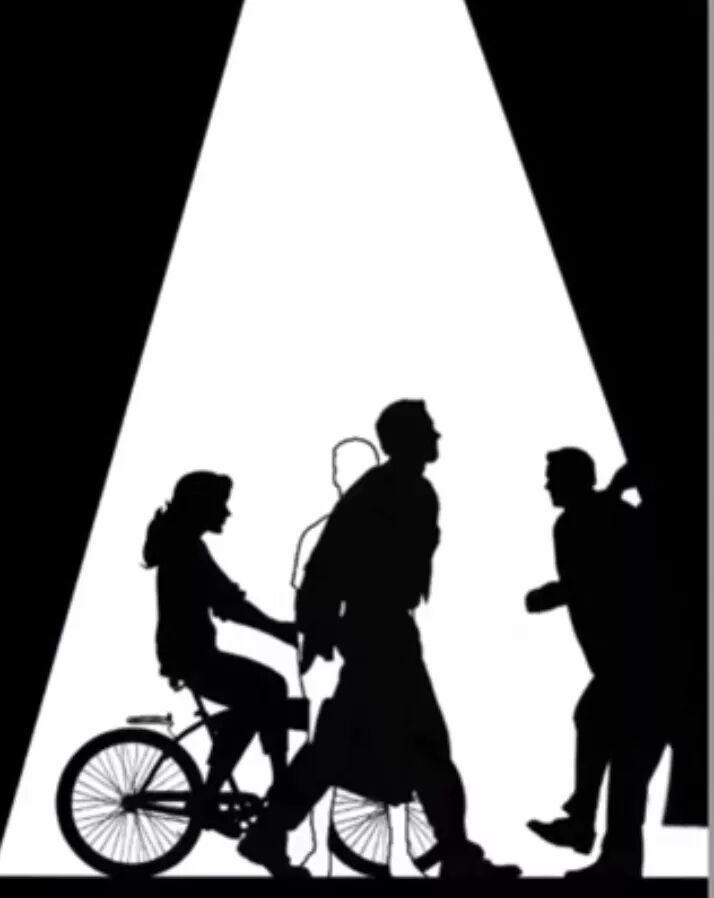

2019考研倒计时三天
经过数场雪花的洗礼
不知不觉
19年考研已经临近
不知道大家复习的怎么样了呢
是否也有这种感觉

是否依然还在被各种各样的公式折磨着
然而不管怎么样
该来的终究会来到
回想我们考研的时光
清晨六点
简单洗嗽走出宿舍楼
整个白天和书本习题浸泡在图书馆
凌晨一点
英语单词还剩五十个没背
很久没看过日出
很久没看过日落
仿佛空气，周遭的人都看不见
可是，你却看的见他们
室友悠然着每一天
曾说一直会陪着你支持你的ta也有些犹豫

更可笑的是
“梦想”二字渐渐成为了忌禁词汇
反倒是这杂乱的书桌
成为了你考研路上最大的慰藉
他们都不理解你
因为对你来说放弃比坚持可难太多
任何值得去的地方都没有捷径
那些打不倒你的，只会让你变得更强大
黑暗中孑然独行的日子并不显得可怜
眼前的书和习题陪着你热泪盈眶
曾经许给自己的美好未来
相信它
迟早会来！
加油！奥里给!
喝完鸡汤后，让我们来看一下考研要注意哪些方面吧
1、考试时间
2020研究生考试时间为2019年12月21日至12月22日（每天上午8:30-11:30，下午14:00-17:00）。考试时间以北京时间为准。
2、饮食调整
近期要考试的同学们就不要吃油腻生冷的东西了，比如：冰淇淋、辣条等。水果什么的也注意少吃，尽量不要让自己的肠胃出毛病。
3、防寒保暖
最近全中国都挺冷的，在这严冬到来之际，一定要注意增减衣物，千万不要感冒！
—END—
文案|王杰
排版|王杰
图片|网络